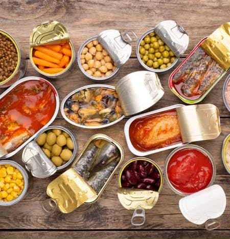

Here's some shocking but true news: those date claims are often regulated by no one but the food brands themselves. "The FDA does not require manufacturers to place expiration or use by dates on food products except for infant formulas," says Deborah Kotz, press officer for the U.S. Food and Drug Administration.
 A 12-year old year-old girl died of suspected food poisoning after consuming panipuri and noodles at a weekly market in Bendala village of Paoni talluka in Bandra district, while 75 others have taken ill.
A healthful diet typically includes nutrient-dense foods from all major food groups, including lean proteins, whole grains, healthful fats, and fruits and vegetables of many colors.
This article looks at the top 10 benefits of a healthful diet, and the evidence behind them.

During the Covid-19 pandemic the Dutch government implemented its so-called ‘intelligent lockdown’ in which people were urged to leave their homes as little as possible and work from home. This life changing event may have caused changes in lifestyle behaviour, an important factor in the onset and course of diseases. The overarching aim of this study is to determine life-style related changes during the first wave of the COVID-19 pandemic among a representative sample of the adult population in the Netherlands.


What if you could snap your fingers and magically wake up every day with a smile on your face? You'd do it in a heartbeat, right? Thing is, this sorcery exists, and you don't even need to snap your fingers—or recite any hocus-pocus. As detailed in a recent issue of Harvard Public Health, there's an inextricable link between your health and your mood; improve one and you improve the other.